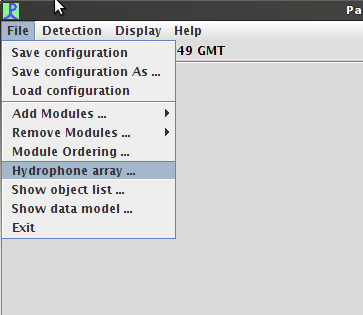

File->Detectors->Likelihood Detector menu item. The Likelihood
detector requires an audio data source, so if there is not a Sound
Acquisition module available, the Likelihood module will prompt you with
a dialog box to create one.
|
|
File->Hydrophone array..." menu option, pictured
below.
|  |

|
| Next: Configuring the Likelihood Detector |
| Previous: Likelihood Detector Introduction |